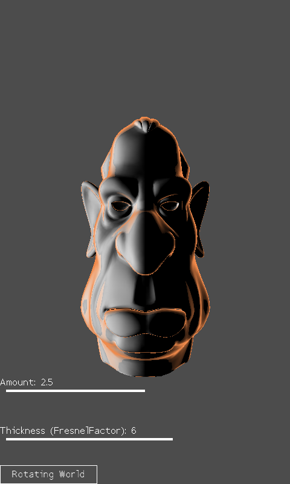

Rim Lighting
Ported from Microsoft's XNA 4.0 Rim Lighting sample.
Source for this sample on GitHub ↗

Play ▸Opens in a new tab. Drag with a finger or hold the left mouse button.
About this sample
An environment map adds a warm highlight around the edge of a sculpted head. Move the Amount and Thickness sliders to change the rim, drag the head to turn it, and tap the button to switch between rotating the world and rotating the camera.
Controls
| Action | Touch or left mouse button |
|---|---|
| Change rim strength | Drag the Amount slider |
| Change Fresnel thickness | Drag the Thickness slider |
| Rotate model or camera | Drag the head |
| Switch rotation mode | Tap or click the bottom button |